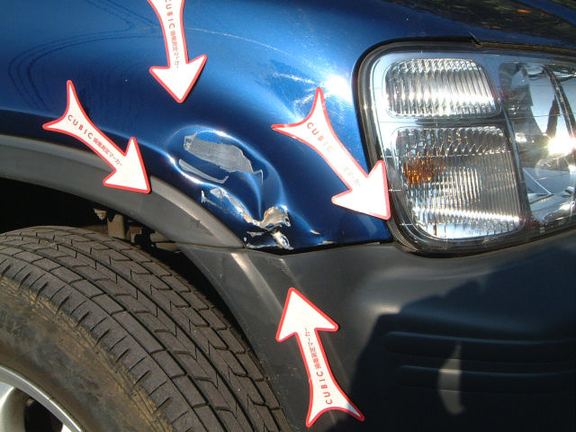
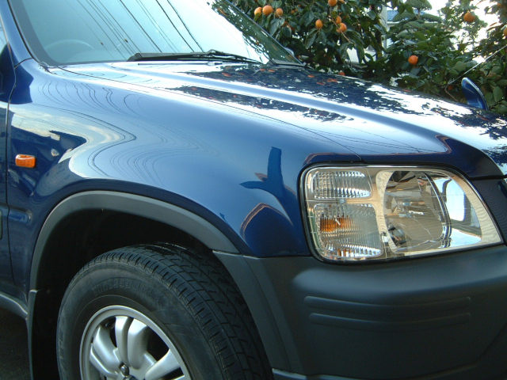
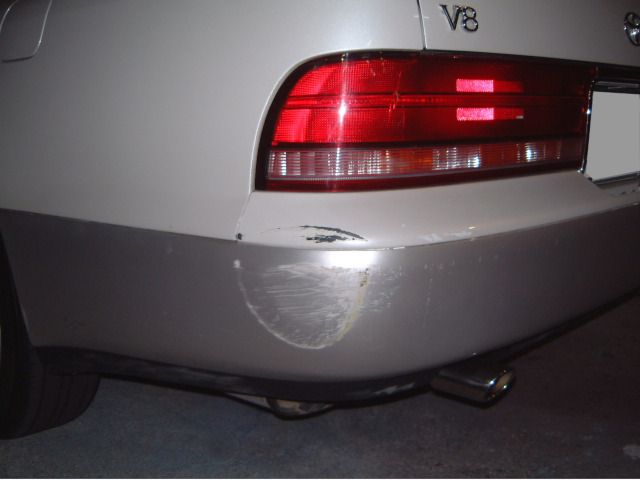
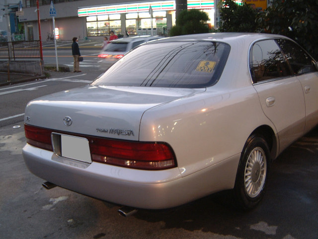

メニュー
- すり傷
- ひっかき傷
- ヘコミ
- フレーム修正
- オールペイント
- 車検
平成9年式CRV(修理前) → フェンダーは板金修理(修理後)
 クラウンマジェスタ(修理前) → バンパー板金塗装(修理後)
 住所 : 神奈川県相模原市中央区淵野辺本町3丁目2-1
最寄駅 : JR横浜線 淵野辺駅より徒歩15分
車でお越しの方 : 国道16号淵野辺十字路を根岸方面へ5分, 町田街道根岸交差点を国道16号方面へ10分
〒252-0202 神奈川県相模原市中央区淵野辺本町3丁目2-1 井上自動車鈑金塗装工業
電話番号 : 042-752-9117